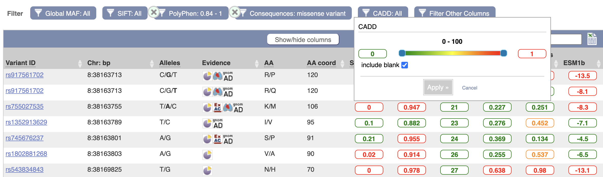

We provide results from a range of algorithms to help assess the potential pathogenicity of a variant.
Genome-wide variant deleteriousness rankings from the CADD algorithm are available for human variants and conservation scores are calculated for many species using GERP.
For human variants that are predicted to result in an amino acid substitution we
use SIFT and PolyPhen-2 to prediction the effect of the change on
protein function. We compute predictions for each of these tools for all possible
single amino acid substitutions in the Ensembl human proteome. This enables us to provide
predictions for novel mutations for VEP and API users. We were able to compute predictions
from at least one tool for over 95% of the human proteins in Ensembl.
SIFT predictions are also available for cat, chicken, cow, dog, goat, horse, mouse, pig, rat, sheep and zebrafish.
Pathogenicity scores from MutationAssessor and MetaLR are also available for human missense variants. To improve compatibility with other resources, these scores are taken from dbNSFP (version 4.9c).
We provide a brief description of each of these tools and how they are made available in Ensembl. For more detail please see the representative papers listed below, and the relevant publications available on each tool's website.
The level of conservation at a locus is strong predictor of the deleteriousness of any change. As an indicator change tolerance, we display GERP conservation scores on our variant pages. CADD scores are also available for human single nucleotide substitutions.
We display conservation scores as computed with the Genomic Evolutionary Rate Profiling
GERP software
on Multiple Sequence Alignments of whole-genomes.
GERP identifies constrained loci in multiple sequence alignments by comparing the level of substitution
observed to that expected if there was no functional constraint.
Positive scores represent highly-conserved positions while negative scores represent highly-variable positions.
The Combined Annotation Dependent Depletion (CADD) tool scores the predicted deleteriousness of single nucleotide variants and insertion/deletions variants in the human genome by integrating multiple annotations including conservation and functional information into one metric. Phred-style CADD raw scores are displayed and variants with higher scores are more likely to be deleterious.
CADD provides genome wide scores. These are displayed on our variant pages in the summary section as well as on transcript-specific variation tables.
CADD provides a ranking rather than a prediction or default cut-off, with higher scores more likely to be deleterious.
For convenience, in our transcript tables we display scores above 30 as 'likely deleterious' and scores below as 'likely benign'. Variants with scores over 30 are predicted to be the 0.1% most deleterious possible substitutions in the human genome.CADD scores are taken from the CADD project web site (version v1.7) for consistency with other resources.
We provide results from a number of algorithms to help evaluate the impact of variants predicted change a genes peptide sequence.
In our transcript tables, we display colour-coded scores for each algorithm to support immediate assessment of a set of variants, but recommend the actual scores are taken into account when interpreting the impact of an individual variant. This is especially important for CADD which do not have default cut-offs for different possible levels of deleteriousness. Our tables displaying the variants found within a transcript can be filtered on the appropriate cut-offs for a specific investigation.
A Variant table for a Transcript showing the colour coding scheme and filtering options.
SIFT predicts whether an amino acid substitution is likely to affect protein function based on sequence homology and the physico-chemical similarity between the alternate amino acids. The data we provide for each amino acid substitution is a score and a qualitative prediction (either 'tolerated' or 'deleterious'). The score is the normalized probability that the amino acid change is tolerated so scores nearer zero are more likely to be deleterious. The qualitative prediction is derived from this score such that substitutions with a score < 0.05 are called 'deleterious' and all others are called 'tolerated'.
We ran SIFT version 6.2.1 following the instructions from the authors and used SIFT to choose homologous proteins rather than supplying them ourselves. We used all protein sequences available from UniRef90 (release 2014_11) as the protein database.
| SIFT value | Qualitative prediction | Website display example | |
|---|---|---|---|
| Less than 0.05 | "Deleterious" |
0.01
|
|
| "Deleterious - low confidence" |
0.01
|
||
| Greater than or equal to 0.05 | "Tolerated" |
0.8
|
|
| "Tolerated - low confidence" |
0.8
|
||
PolyPhen-2 predicts the effect of an amino acid substitution on the structure and function of a protein using sequence homology, Pfam annotations, 3D structures from PDB where available, and a number of other databases and tools (including DSSP, ncoils etc.). As with SIFT, for each amino acid substitution where we have been able to calculate a prediction, we provide both a qualitative prediction (one of 'probably damaging', 'possibly damaging', 'benign' or 'unknown') and a score. The PolyPhen score represents the probability that a substitution is damaging, so values nearer one are more confidently predicted to be deleterious (note that this the opposite to SIFT). The qualitative prediction is based on the False Positive Rate of the classifier model used to make the predictions.
We ran PolyPhen-2 version 2.2.3, release 405c (available here) following all instructions from the authors and using the UniProtKB UniRef100 (release 2013_10) non-redundant protein set as the protein database and DSSP (snapshot 22-Nov-2013) and PDB (snapshot 22-Nov-2013) as the structural databases. When computing the predictions we store results for the classifier models trained on the HumDiv and HumVar datasets. Both result sets are available through the variation API which defaults to HumVar if no selection is made. (Please refer to the PolyPhen website or publications for more details of the classification system).
| Polyphen value | Qualitative prediction | Website display example |
|---|---|---|
| greater than 0.908 | "Probably Damaging" | 0.95 |
| greater than 0.446 and less than or equal to 0.908 | "Possibly Damaging" | 0.5 |
| less than or equal to 0.446 | "Benign" | 0.25 |
| unknown | "Unknown" | unknown |
MetaLR uses logistic regression to integrate nine independent variant deleteriousness scores and allele frequency information to predict the deleteriousness of missense variants. Variants are classified as 'tolerated' or 'damaging'; a score between 0 and 1 is also provided and variants with higher scores are more likely to be deleterious.
MetaLR scores are calculated by the dbNSFP project
MutationAssessor predicts the functional impact of amino-acid substitutions in proteins using the evolutionary conservation of the affected amino acid in protein homologs. We display the prediction, which is one of 'neutral', 'low', 'medium' and 'high', and the rank score, which is between 0 and 1 where variants with higher scores are more likely to be deleterious.
MutationAssessor scores are calculated by the dbNSFP project.
Precomputed predictions and scores for missense variants are stored in the variation databases and are accessible in the variation API by using methods such as sift_prediction, sift_score, polyphen_prediction and polyphen_score on a Bio::EnsEMBL::Variation::TranscriptVariationAllele object. For anyone wishing to access the complete set of predictions from the MySQL database or API, an explanation of the format used is provided here.
The predictions and associated scores are stored as a matrix, with a column for each possible alternate amino acid and a row for each position in the translation. Each prediction for a position and amino acid is stored as a 2-byte value which encodes both the qualitative prediction and score encoded as described below. A simple example matrix is shown in the figure below, though note we only show the decoded score rather than the actual binary value stored in the database.
Prediction matrices can be fetched and manipulated in a user-friendly manner using the variation API, specifically using the ProteinFunctionPredictionMatrixAdaptor which allows you to fetch a prediction matrix using either a transcript or a translation stable ID. This adaptor returns a ProteinFunctionPredictionMatrix object and you can use the get_prediction method to retrieve a prediction for a given position and amino acid. If you want to use entire matrices, you should use the deserialize method to decode an entire binary formatted matrix into a simple Perl hash. Please refer to the API documentation for both of these classes for more details. If you require direct access to the MySQL database (for instance because they are accessing the database in a language other than Perl) we provide a description of the binary format used below.
Prediction matrices for each translation from each of SIFT and PolyPhen are stored in the protein_function_predictions table. The analysis used to calculate the predictions is identified in the analysis_attrib_id column which refers to a value stored in the attrib table, and the protein sequence the predictions apply to is identified by the translation_md5_id column which refers to a hexadecimal MD5 hash of the sequence stored in the translation_md5 table. The prediction matrices are stored in the prediction_matrix column as a gzip compressed binary string. Once uncompressed, this string contains a 40 byte substring for each row in the matrix concatenated together in position order. Each row is composed of 20 2-byte predictions, one for each possible alternative amino acid in alphabetical order, though note that the value for the amino acid that matches the reference amino acid is identified as a 2-byte value with all bits set, or 0xFFFF in hexadecimal notation. The prediction itself is packed as a 16 bit little-endian ("VAX" order, or "v" format if using the perl pack subroutine) unsigned short value. The top two bits of this short are used to encode the qualitative prediction (PolyPhen has four possible values, while SIFT has just two), and the bottom ten bits are used to encode the prediction score. To decode the qualitative prediction you should mask off all bits except the top two, and shift the resulting short right by 14 bits and treat this as an integer between zero and three. The corresponding prediction can then be looked up in the table below. To decode the prediction score you should mask off the top six bits and the resulting value can be treated as a number between zero and 1000, which should be divided by 1000 to give a three decimal place score (casting to a floating point type if necessary). Bits 11-14 are not used, except to encode the "same as reference" dummy prediction 0xFFFF.

A diagram of the encoding scheme is shown above. In this example from a polyphen prediction, the top prediction bits are 0b01 which in decimal is the number 1, which corresponds to "possibly damaging" in the table below. The score bits are 0b1110001010 which in decimal is the number 906, which when divided by 1000, gives a score of 0.906.
| Tool | Encoded value | Qualitative prediction |
|---|---|---|
| PolyPhen | 0 | "probably damaging" |
| PolyPhen | 1 | "possibly damaging" |
| PolyPhen | 2 | "benign" |
| PolyPhen | 3 | "unknown" |
| SIFT | 0 | "tolerated" |
| SIFT | 1 | "deleterious" | SIFT | 2 | "tolerated - low confidence" |
| SIFT | 3 | "deleterious - low confidence" |
To retrieve a prediction for a particular amino acid substitution at a given position in a translation, first you must retrieve the binary matrix from the database and uncompress it using gzip. You can calculate the offset into this string by multiplying the desired position (starting at zero) by 20 and then adding the index of the desired amino acid in an alphabetical ordering of amino acids (also starting at zero), and then multiply this value by two to take into account the fact that each prediction uses two bytes. Each matrix also includes a three byte header used check if the data is corrupted etc. so you will also need to add three to the calculated offset. The two bytes at the calculated position can then be extracted and the approach described above can be used to retrieve the prediction and score. A perl implementation of this scheme can be found in the Bio::EnsEMBL::Variation::ProteinFunctionPredictionMatrix module in the variation API and should hopefully inform attempts to reimplement this scheme in other languages.
Adzhubei IA, Schmidt S, Peshkin L, Ramensky VE, Gerasimova A, Bork P, Kondrashov AS, Sunyaev SR.
A method and server for predicting damaging missense mutations
Nature Methods 7(4):248-249 (2010)
doi:10.1038/nmeth0410-248
Dong C., Wei P., Jian X., et al.
Comparison and integration of deleteriousness prediction methods for nonsynonymous SNVs in whole exome sequencing studies.
Human Molecular Genetics 24(8):2125-2137. doi:10.1093/hmg/ddu733. (2015)
doi:10.1093/hmg/ddu733
Cooper G.M., Stone E. A., Asimenos G. et al.
Distribution and intensity of constraint in mammalian genomic sequence
Genome Res. 15: 901-913 (2005)
doi:10.1101/gr.3577405
Kumar P, Henikoff S, Ng PC.
Predicting the effects of coding non-synonymous variants on protein function using the SIFT algorithm
Nature Protocols 4(8):1073-1081 (2009)
doi:10.1038/nprot.2009.86
Liu X, Li C, Mou C, Dong Y, and Tu Y.
dbNSFP v4: a comprehensive database of transcript-specific functional predictions and annotations for human nonsynonymous and splice-site SNVs.
Genome Medicine 12 103 (2020)
doi:10.1186/s13073-020-00803-9
Rentzsch, P. , Witten, D.M., Cooper, G.M. and Shendure, J., Kircher, M.
CADD: predicting the deleteriousness of variants throughout the human genome
Nucleic Acids Res. 47:D886–D894 (2018)
doi:10.1093/nar/gky1016
Reva, B., Antipin, Y. Sander, C.
Predicting the functional impact of protein mutations: application to cancer genomics
Nucleic Acids Research Volume 39, Issue 17, Pages e118 (2011)
doi:10.1093/nar/gkr407